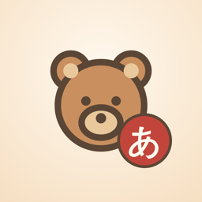

Life in Another LanguageSupport
Need a hand? Here are answers to common questions.
How do I restore my Village Pass?
Open the Village Pass screen (tap a locked town on the map) and tap Restore purchases. Use the same Apple ID or Google account you bought it with.
How do I cancel the monthly plan?
On iPhone: Settings → your name → Subscriptions → Life in Another Language. On Android: Play Store → Payments & subscriptions → Subscriptions. Cancel at least 24 hours before the period ends to avoid the next charge.
What's free?
Inkbrush Village (hiragana, katakana and first kanji) and the first chapter of Clover Meadow are free, with up to 15 minutes of play a day. The Village Pass removes the daily limit and opens every town.
Is my progress backed up?
Progress is saved on your device. Deleting the app removes it.
Something else?
Report a problem or ask a question by opening an issue.